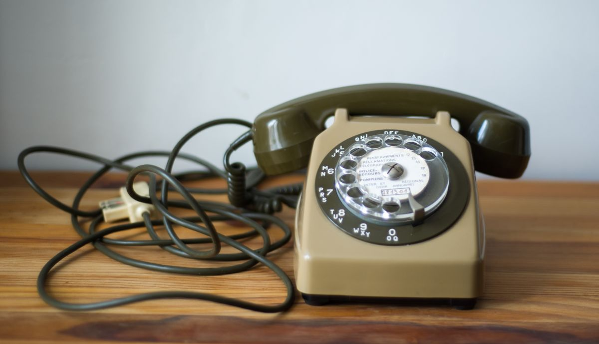
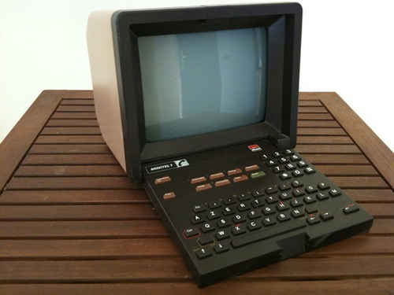

CONNECTIVITE & CONNECTIQUES
INTERNET... KEZAKO ?
En France, au milieu des années 1970, le président de la république s’appelle Valéry Giscard d’Estaing, et de nombreux experts s’interrogent sur l’émergence de la « téléinformatique ». Les ingénieurs du CNET (pour Centre national d’études des télécommunications) s’efforcent alors de peaufiner leur vision de la « télématique », mot-valise composé des termes « télécommunications » et « informatique ». Des moyens financiers considérables sont investis dans cette expérimentation, qui aboutira à la création du réseau Transpac, et quelques années plus tard, à l’arrivée chez des millions de Français d’un certain Minitel.
Parce qu’on n’a pas toujours eu un écran 4K devant les yeux, un smartphone OLED HDR dans la main et des manettes sans-fil sur les genoux, nous vous proposons un petit retour rafraîchissant dans le passé, à la (re)découverte de certains produits emblématiques qui ont fait (ou pas) l’Histoire de la tech.

3615 BALBUTIEMENTS
Au début des années 1980, ce bon vieux téléphone filaire, généralement installé sur un petit meuble en bois prévu uniquement à cet effet, et recouvert d’un tissu « pour ne pas l’abimer », est présent dans de nombreux foyers. Evidemment, pas d’Internet à l’époque, pas de réseau mobile non plus, pas de Facebook ou autre Google, et le Minitel ambitionnait alors de devenir une plateforme incontournable pour s’informer, mais aussi se divertir, tout en s’appuyant sur le réseau téléphonique existant.
A ce sujet, on se souvient que les sessions téléphoniques étaient autrement moins confidentielles qu’aujourd’hui, l’interlocuteur étant bien souvent assis sur la petite chaise installée à côté du combiné, certains papas à moustache et à pantalon de type “patte d’éph” n’hésitant pas d’ailleurs à porter l’écouteur (situé à l’arrière du combiné) à leur oreille pour suivre une conversation. Vous vous souvenez ? Bon, et bien c’est dans ce contexte que le Minitel est lancé.
Dans un premier temps, les tests organisés par la PTT se focalisent sur quelques milliers de foyers seulement, l’un des principaux objectifs du minitel étant de remplacer ce cher (et épais) annuaire téléphonique. Les plus anciens d’entre vous se remémorent sans doute les indispensables « Pages Jaunes » et « Pages Blanches » de l’époque, à renouveler chaque année. C’est en 1982 que le Minitel sera lancé sur le marché, avec une production alors réservée à trois constructeurs, à savoir : Matra, Philips et Alcatel.
Tous sont en mesure de se connecter au réseau Télétel (il fallait au préalable relier le Minitel à la prise téléphonique murale), avec des services en ligne accessibles depuis le réseau téléphonique, et une commande bien spécifique. L’usage premier du Minitel était le 3611, qui permettait d’accéder à un service d’annuaire téléphonique en ligne…et force est d’admettre qu’il s’agissait là d’une petite révolution !
Un minitel au look étonnant, qui prenait évidemment des formes diverses en fonction du constructeur et de la génération. Les premiers modèles étaient munis d’une prise « T » pour la connexion au réseau téléphonique, et d’un modem V23, permettant des téléchargements de 1 200 bit/s en réception et 75 bit/s en émission. A l’écran, les images s’affichent en mode mosaïque, certains modèles étant dotés d’écran couleur, quand d’autres devaient se contenter de quelques nuances de gris. Certains disposaient d’un clavier fixe, quand d’autres profitaient d’un clavier coulissant, qui venait se glisser sous l’écran lorsque le Minitel était inutilisé, voire d’un clavier pivotant, qui venait recouvrir l’écran.
A noter que les premiers modèles étaient livrés avec un clavier de type alphabétique. Les modèles ultérieurs ont rapidement opté pour des claviers de type « AZERTY », pour le plus grand bonheur des habitués comme des néophytes. La procédure pour se connecter était plutôt simple, puisqu’il fallait allumer son minitel, composer le 3615 (ou autre) sur son téléphone, attendre le bip confirmant la connexion, et presser la touche « Connexion/Fin » de son Minitel avant de raccrocher le combiné.
Rapidement, outre l’annuaire, le service va permettre d’accéder à de nombreuses autres fonctionnalités, et si certains se remémorent du minitel familial pour l’achat de billets de train, beaucoup sont ceux à se rappeler des quelques jeux disponibles depuis la commande 3615, sans oublier les services « roses » tel que l’inoubliable 3615 Ulla.

DES BALBUTIEMENTS A... 3615 REVOLUTION
Au fur et à mesure, le Minitel s’installe dans de très nombreux foyers en France, et voit son panel de fonctionnalités exploser. Difficile d’oublier par exemple l’incontournable 3615 Dorothée à la fin des années 80, permettant d’interagir avec les animateurs de l’émission Club Dorothée, mais aussi de participer à des jeux, de classer des chansons ou encore d’influer directement sur la programmation des dessins animés. C’était fou !
Bien sûr, en plus de monopoliser la ligne téléphonique (et donc de couper l’accès au téléphone), l’utilisation du Minitel engendrait un surcoût sur la facture. Si le 3611 était gratuit durant les trois premières minutes (on se souvient tous de nos parents effectuant leurs recherches à toute vitesse pour se déconnecter avant les 180 secondes), ce n’était pas le cas des services de type 3615, facturés parfois jusqu’à 2,30 Francs la minute. Nombreux sont celles et ceux qui ont profité du Minitel pour découvrir les résultats du baccalauréat par exemple, ou encore pour effectuer leur inscription à l’université. Une révolution on vous dit ! 3615 Batman, 3615 Astérix, 3615 TF1, 3615 Père Noel, 3615 Pendu, 3615 3 Suisses, 3615 M6… Tout était bon pour faire exploser les factures téléphoniques, sans compter le fait que chaque affichage de page était d’une longueur abominable.
LE DEBUT D'UNE LONGUE HISTOIRE... INTERNET
Accessible initialement à un nombre réduit d'utilisateurs dans un petit nombre d'entreprises et d'universités, l'utilisation de l'Internet par le grand public n'a commencé qu'à partir de 1994 et s'est vraiment démocratisé au début du xxie siècle par l'apparition de l'ADSL.
Pendant l'été 1988, l'INRIA connecte le réseau NSFNet de Sophia Antipolis à Princeton par une liaison satellite louée à France Telecom et MCI. La liaison est opérationnelle le 8 août 1988 et permet aux chercheurs de l'INRIA d'accéder au réseau américain et aux chercheurs de la NASA de consulter la base de données astronomique basée à Strasbourg. C'est la première fois que les réseaux français sont connectés directement à un réseau en utilisant TCP-IP, le protocole de l'Internet. Cela reste limité à la recherche et l'éducation pour quelques années.
En 1992, presque simultanément, French Data Network et Altern (par l'intermédiaire du service minitel 3616 ALTERN) ont permis au grand public de se connecter au réseau Internet. L'accès au World Wide Web n'existait pas encore et les services offerts étaient le courrier électronique, les news par le réseau Usenet, l’accès à de nombreuses archives de logiciels et de documentation et l’accès aux machines du réseau Internet.
Le premier véritable fournisseur d'accès grand public fut WorldNet qui ouvrit ses portes en février 1994 lors du Computer Associates Expo. Ensuite FranceNet lança son service en juin 1994. FranceNet fut fondé par Rafi Haladjian. Ensuite, suivirent dans l'ordre Calvacom, Internet Way et Imaginet.
Bien sûr nous sortons de notre dizaine de prédilection, c'est donc pourquoi l'introduction d'internet s'arrêtera ici, peut-être en parlerons-nous sur un autre site ?
La fin du Minitel, et l’essor d’Internet
Au début de l’année 1986, la France compte un peu moins de 1,5 million de Minitel, installés dans les entreprises, dans les bureaux de Poste et bien sûr dans les foyers. En 1993, ce sont plus de 6,5 millions de Minitel qui sont en circulation en France, avec plus de 25 000 services disponibles.
Evidemment, quelques années plus tard, un certain Internet viendra bouleverser la donne, et ringardiser le principe du Minitel. Pourtant, en 2009, France Télécom enregistrait encore plus d’un million de requêtes sur le 3611. Pas de quoi empêcher le groupe de fermer définitivement le service trois ans plus tard (en juin 2012), à une époque où l’on estimait alors à 600 000 environ le nombre de Minitels encore en circulation dans notre pays.
Depuis quelques années déjà, le Minitel est une véritable relique du « monde d’avant », et si la majorité des propriétaires se sont débarrassés de leur embarrassant Minitel, nombreux sont ceux à rechercher aujourd’hui des modèles en bon état, afin, non pas d’accéder au 3615 Ulla, mais plutôt de transformer ces derniers en de petites bornes d’arcade. Et pour briller à table ce dimanche, précisons que l’appellation « Minitel » est l’abréviation de Médium interactif par numérisation d’information téléphonique